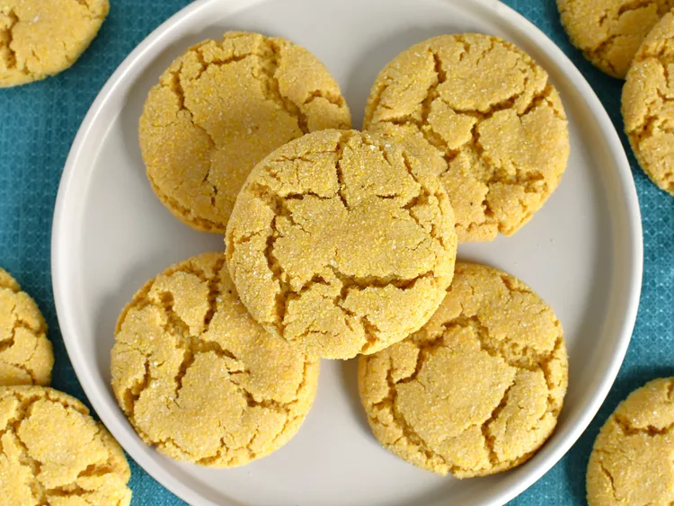

Corn meal Cookies
Cornmeal Cookies

Description
Similar texture to sugar cookies but with a touch of cornmeal that works amazingly well with surprasingly crunch. Combined with sweetness of honey and creaminess of buttercream hits a perfect spot.
Ingridients
For the cookies
- 12 tbsp (1 ½ sticks) unstaled butter
- ½ cup granulated sugar
- 1 tsp vanilla extract
- 1 egg yolk
- 1 ½ cups all-purpose flour
- ½ tsp kosher salt
For the buttercream
- 12 tbsp (1 ½ sticks) unslated butter, room temperature
- 2 ½ cups sifted powdered sugar
- ¼ cup of honey
Steps
For the cookies
- Preheat oven to 350°F.
- Cream the butter and sugar until light and fluffy, 3-5 minutes.
- Mix in vanilla extract and egg yolk.
- Add flour, cornmeal, and slat and mix until no dry streaks reamin.
- Use a cookie to portion 2 tablespoon-size cooke ball onto parchment-lined baking sheets.
- Spray the buttom of a glass with nonstick baking spay and flatten each cookie to about ¼ inch.
- Bake 8-12 minutes. The cookes will color just slightly and be firm to touch.
- Remove from the oven and cool on the backin pan for 5 minutes. Finish coolin on a cooling rack.
For the buttercream
- Craem the butter with a hand mixer or stand mixer.
- Mix in the sugar and honey, adding more honey if the mixture need to be thined.
To assemble
- Spread approximately 2 teaspoons of filling on the bottom of one cookie and sandwich with another cookie palced on top.
Tip: Do not assemble the sandwiches until the cookies are compleatly cool
More recipes here:
Lemaon Coconut Cake
Pumpkin Turkey Chili
You may be looking to go back to the index page.